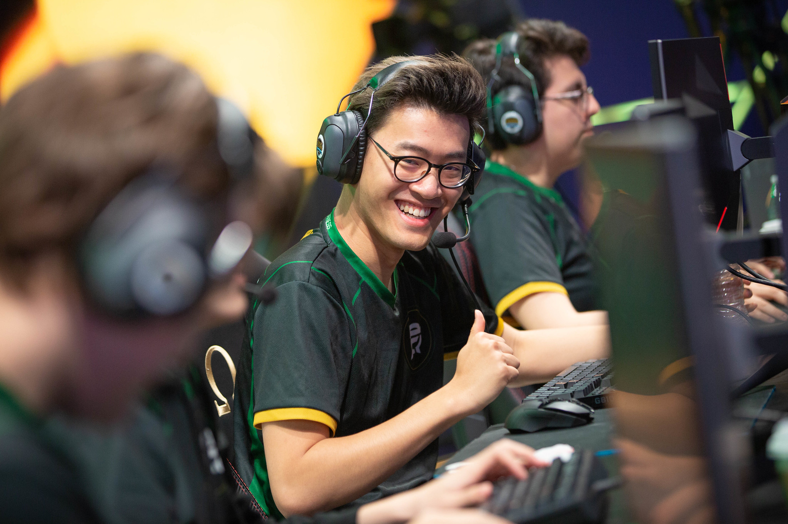
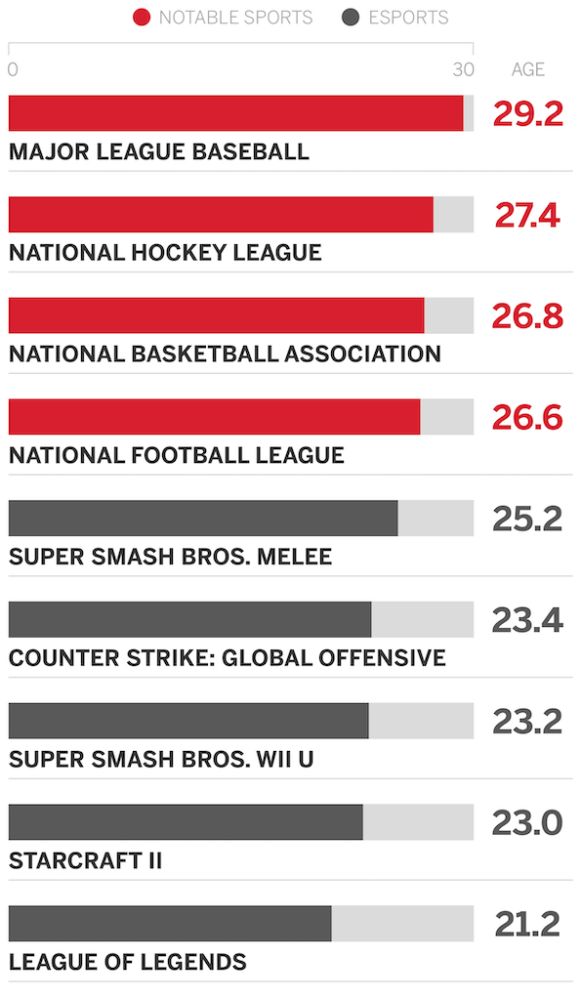
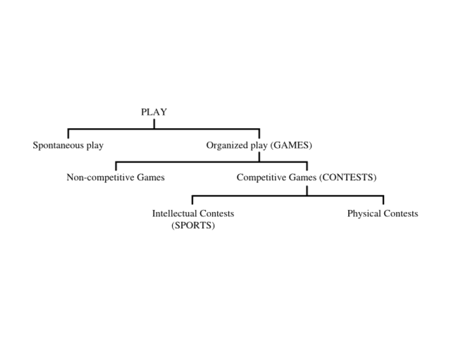

North American eSports: Undefined and Unregulated.
(FlyQuest's Jason "WildTurtle" Tran. Image via Riot Games).
What are they?
While it is not accurate to provide an objective definition of eSports—as their definition is arguably the most common discourse in eSports currently with little general consensus—a brief, general definition is helpful for improving one's understanding of the field. Game researchers Juho Hamari and Max Sjöblom chose to define eSports in their work as “a form of sports where the primary aspects of the sport are facilitated by electronic systems; the input of players and teams as well as the output of the eSports system are mediated by human-computer interfaces.” Although an generally accurate definition, their claim of eSports as being a form of sport is definitely not generally agreed upon. Alternative definitions that also partially describe eSports include "organized video game competitions" (from work by Jenny, Manning, Keiper, and Olrich) and “an area of sport activities in which people develop and train mental or physical abilities in the use of information and communication technologies” (from work by Wagner) to list a couple. In general, eSports are commonly video games that inherently lean themselves towards high-level, competitive play with built-in matchmaking structures that allow them to function similar to traditional sports leagues. The main point is that regardless of whether eSports are clearly defined, they can and do establish professionally competitive, full-time careers for hard-working and dedicated players. This makes their examination important, as these careers have a high risk of labor rights violations due to unregulated, fragmented markets that implicitly grant developers unprecedented levels of executive control and bargaining power, especially due to the inexperience of young eSports players (In LoL, the average age of a professional player is estimated to be 21.2 years old. Comparison to traditional sports leagues below).
(Comparing Average Athlete Ages in Traditional Sports v. eSports. Data Analysis and Graphic via ESPN).
Does it matter if they are considered a sport?
Well, sort of. Especially in the United States, classifying an activity or competition as a sport has significant legal meaning. Sports have consistently experienced the enactment and application of exclusive statutes that deal with broadcasting, gambling, antitrust, and safety regulations. There have been several specific instances in recent eSports history that—depending on eSports’ status as a sport—would have varying outcomes in certain litigation contexts (an example being Riot Games banning a commentator from the 2016 League of Legends World Championships using subjective, personal reasoning, which would be upheld if eSports was defined as sport due to the historical precedent set by the 1974 court case Levin & Lipton v. NBA et al.). Riot Games, developer of the eSport League of Legends, is based in California (with the LCS being a Delaware Limited Liability Company owned and managed by Riot) meaning all eSports related disputes from any LCS-contracted player or team would be subject to U.S. law. Therefore, determining the classification of eSports may be essential if concerns regarding potential future eSports litigation and policy conflicts are to be identified accurately.
However, if eSports were found to not classify as sport, it may not have any systematically negative impacts. Even if courts do not recognize eSports as sport, independent non-profit entities could still regulate eSports in a way similar to that of traditional sports. Additionally, U.S. Citizenship and Immigration Services has already applied sports athlete-specific laws to the benefit of eSports players when they granted LoL player Danny “Shiptur” Le a P-1A visa to compete through a salaried position in 2013. This implies that some federal agencies may still choose to apply sports-exclusive policy to eSports on a case-by-case basis, making formal definition slightly less necessary. While sport classification would be beneficial due to its ability to provide eSports with more legitimacy and guaranteed, streamlined protections through already established frameworks, it may not have many ramifications outside of specific legal contexts.
So, is it a sport then?
As of right now, it is unfortunately not very clear. No U.S. court has ruled on whether or not eSports constitute sport, but many scholars from Sports Studies and Legal fields have made their own attempts. eSports definition has been contested in these fields since Hemphill’s 2005 piece on what he referred to as “cybersport.” His analysis focused on moral and social reasoning, but also took into account how video games can, in some ways, be considered sport due to the interactivity of some games requiring legitimate skilled physicality. Later works, like Jonasson and Thiborg’s in 2010, attempted to incorporate eSports within a previously established modern sport framework developed for determining whether a given type of “play” can be considered a sport. The framework used makes sports definition dependent on whether a given type of play could be considered organized, competitive, and intellectual. According to the framework, eSports would likely constitute sport.
(Framework used in Jonasson and Thiborg piece).
In 2016, sports studies researcher Veli-Matti Karhulahti took a unique approach by utilizing a unique dual framework which combined ideas of executive ownership and internationally recognized definition to attempt to explain eSports as sport. Although he concedes that “esport products are, without question, forms of sport as per their nature of competition, skill requirements, physical precision, and ethical aptness,” he argues that because eSports are exclusively-owned, profit-generating products (contrary to traditional conceptions of sport), they do not satisfy Sport Accord’s (an internationally reputable sport association) fifth criterion from their 2016 sport definition stating that a sport must not have to “rely on equipment that is provided by a single supplier.” He essentially argues that eSports currently lack the freedom associated with traditional sports play, as one's ability to perform and practice an eSport is limited to tools provided by the eSport developer themselves (for example, only being able to play League of Legends through a client and user interface designed by Riot Games).
Similarly, Hallman and Giel utilize a combination of criteria from European Commission white papers and scholars Gratton and Taylor, resulting in a five-pronged test based on existence of physical activity, recreational practice, competition elements, institutional organizations, and general social and media acceptance. They concluded that “one can argue that eSports is close to but not yet equivalent to sports,” but also state that eSports—due to continued acceptance in sports business and the satisfaction of four out of their five criteria (exception is institutional organizations)—“will likely be officially accepted as a sport and eventually even included to the Olympic programme.” This approach is nearly mirrored by that of researchers Funk, Pizzo, and Baker who used almost identical criteria yet came to the conclusion that eSports “events and competitions”—specifically those organized by Riot Games and Valve—“meet all requirements [and] should be classified as sport."
In 2017, legal scholars Holden, Kaburakis, and Rodenberg created a general eSports policy and litigation forecast which heavily emphasized sport definition. Their work utilizes an extensive list of compiled tests from legal briefs used in previous sports-related court cases, literature on criteria for sports definitions, and adapted dictionary definitions. They are used to establish a general conception of how well eSports fit into varying traditional legal sports classification frameworks. Under their aggregated tests, eSports generally pass the majority of them. They do not specifically state whether they believe eSports will be classified as a sport in the future, but they do state that eSports will likely either self-regulate, function “similar to other sports,” or eventually be classified as sport due to eSports stakeholders’ option of “legislatively pursuing (e)sports-specific exemptions” for disputes such as immigration.
conclusion
As can be gleaned from the articles discussed above, how and why eSports does or does not constitute sport varies not only by field, but also by individual. The crucial takeaway is that regardless of personal stance, most scholars agree that eSports will likely fall into a framework of regulation and cultural status similar to that of traditional sports regardless of their actual legal definition. This makes comparisons to traditional sports regulation and labor rights imperfect yet still useful in determining currently lacking areas of policy for eSports professionals.